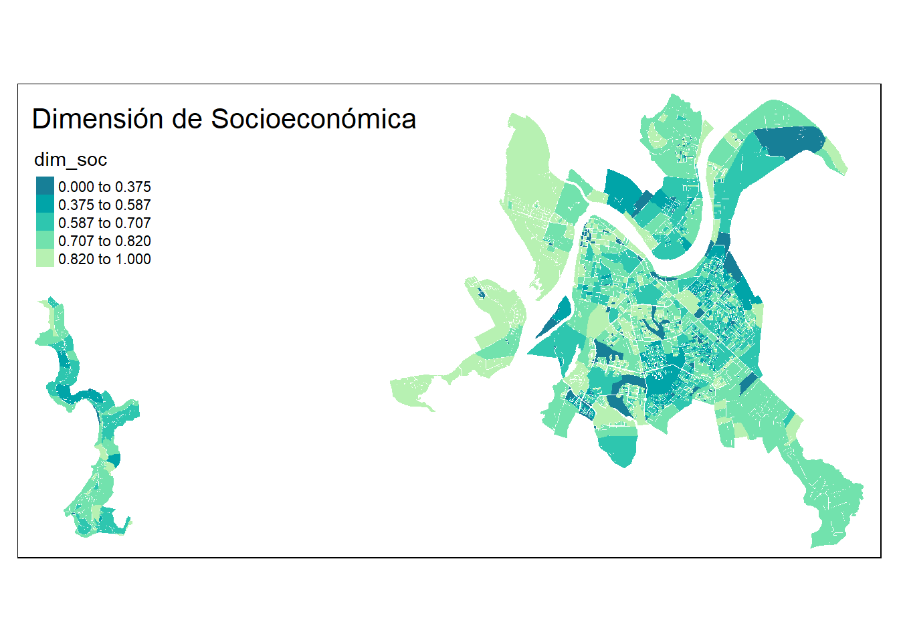
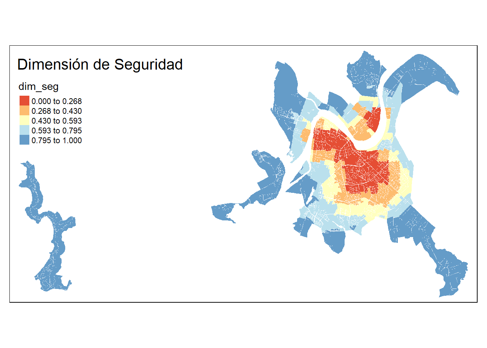

library(sf)
library(dplyr)
library(stringr)
library(stringr)
library(purrr)
library(tmap)
source("R/conf_consolidate.R")
options("rgdal_show_exportToProj4_warnings"="none")6 Consolidación de Dimensiones

6.1 Resumen
En esta sección se muestran los pasos finales en la construcción del indicador de bienestar humano territorial. Este paso toma todos los indicadores ya calculados y los procesa para la construcción de un indicador compuesto. Las principales características de este es ser un indicador que releva la locación de los fenómenos y las relaciones de vecindad que existen en el territorio.
Un indicador compuesto se define como una combinación matemática de un conjunto de indicadores individuales que representan distintos componentes de un fenómeno multidimensional. Comúnmente los análisis de indicadores compuestos operan sobre promedios de unidades administrativas o nacionales. Sin embargo, rara vez los fenómenos sociales, económicos y ambientales siguen una distribución uniforme dentro de estas unidades. Por lo tanto, incorporar la dimensión espacial de las variables permite enriquecer los modelos y el poder analítico de los indicadores compuestos (Trogu and Campagna 2018).
Al incorporar la locación en el análisis es posible relevar las relaciones de vecindad entre observaciones. Estas ponen de relieve relaciones de dependencia espacial y heterogeneidad espacial, las cuales invalidan la hipótesis de independencia espacial entre las variables, por lo que es necesario incorporar técnicas de estadística espacial al análisis (Anselin 1989). Estas buscan profundizar en los patrones espaciales de las variables, detectando clustersy regiones de contagio (Getis 1999).
Existe numerosa literatura que busca resumir y recomendar los pasos en la construcción de indicadores compuestos (Commission et al. 2008; Soto de la Rosa and Schuschny 2009) los cuales hacen énfasis en los pasos de análisis de las variables y las unidades de análisis, buscando agrupaciones de variables o de observaciones que se comportan de forma similar. Estos pasos permiten extenderse y usar técnicas de estadística espacial en el contexto de indicadores en el territorio (Trogu and Campagna 2018). En esta literatura se encuentra también una discusión sobre los métodos de agregación y el trade off entre la complejidad de estos y la comunicabilidad de los resultados.
6.2 Insumos
Los insumos para la consolidación de este proceso son los indicadores ya calculados de las dimensiones que componen la Matriz de Bienestar Humano Territorial (MBHT):
Dimensión Socioeconómica
Dimensión Ambiental
Dimensión Seguridad
Dimensión Accesibilidad
6.3 Proceso
El proceso de cálculo y consolidación toma como entrada los indicadores ya calculados y comienza por analizar los valores faltantes (indicadores que se indefinen porque no existe población relevante en la manzana) e imputar valores a partir de los vecinos de las manzanas. Luego, con el objetivo de consolidar las dimensiones, se normalizan los indicadores y se invierten cuando sea el caso, con el objetivo de expresarlos en una escala consistente.
El indicador compuesto se construye a partir de las dimensiones ya consolidadas. Luego de esto se analiza el patrón espacial de bienestar, mediante un análisis de clúster geográfico que identifica territorios de alto y bajo bienestar.
A continuación se explica en mayor detalle cada subproceso.
6.3.1 Imputación de valores por vecinos
Debido a que los indicadores hacen referencia a la población y que existen casos de manzanas en el territorio que no cuentan con información poblacional, es que en estos casos los indicadores que hacen referencia a esta población se indefinen. Es por esto y con el objetivo de no excluir territorios del análisis, que se asignan valores de indicadores a estas manzanas.
El método usado es una interpolación por inverso de distancia, y consiste en identificar las manzanas vecinas con información del indicador en cuestión. A partir de lo cual se construye un promedio ponderado por el inverso de la distancia. Es decir que las manzanas más cercanas cuentan con mayor peso en el cálculo del valor que se imputa en la manzana.
6.3.2 Consolidacion de Dimensiones
La consolidación de las dimensiones es un proceso que se realiza para los indicadores que componen cada dimensión. Esto implica normalizar la escala de análisis y en algunos casos aplicar transformaciones a la serie de datos originales.
El objetivo de las transformaciones es evitar el impacto desmedido que puedan tener observaciones atípicas o outliers. Esto es particularmente relevante para los indicadores de accesibilidad, que debido a su naturaleza que involucra población y oportunidades, ocurren casos donde la densidad de población en el territorio es baja y las oportunidades son relativamente altas, lo que genera valores muy altos. El bienestar derivado de estas oportunidades es decreciente. Esto implica que una unidad adicional de oportunidades es más valiosa cuando el punto de partida es más bajo, que cuando hay exceso de oportunidades. Estas razones llevan a aplicar una suavización por raiz cúbica a la serie de datos de accesibilidad antes de normalizarla.
La normalización implica expresar los datos en una escala de valores entre 0 y 1 y se consigue al asociar el valor 0 y 1 a los valores mínimos y máximos de la serie.
Una vez que los indicadores fueron suavizados y normalizados se procede a consolidarlos a nivel de dimensión. Este proceso se realiza mediante promedio simple, promedio ponderado o algoritmos de agregación específicos. A continuación, se menciona y explica el método de agregación de cada dimensión.
Dimensión Socioeconómica: Promedio simple.
Dimensión Ambiental: Índice de Mazziota Paretto (MPI).
Dimensión Seguridad: Ponderación por gravedad del hecho delictivo.
Dimensión de Accesibilidad: Promedio Simple.
El método de agregación de Mazziota Paretto (Mazziotta and Pareto 2016) es procedimiento no compensatorio y de simple cálculo. Este implica castigar la variabilidad en las series de datos originales, y se expresa como un promedio castigado por varianza. Esto implica que valores más altos pueden ser castigados por que la serie subyacente de datos presenta alta variabilidad, series con valores muy altos y muy bajos que se promedian en un valor medio. Este método castiga esta variabilidad, y con esto castiga la sustitución entre indicadores. En particular, en la dimensión ambiental, un mayor nivel de cobertura vegetal no compensa por tener inviernos muy fríos y veranos muy calurosos. y viceversa.
La ponderación por gravedad del hecho delictivo implica que la inseguridad generada por delitos graves se pondera con el doble de importancia con la inseguridad de delitos leves.
6.3.3 Consolidación de Indicador Compuesto
Finalmente, una vez que se cuenta con las dimensiones consolidadas se procede a generar el indicador de bienestar. Este es un promedio ponderado de cada dimensión proporcional al número de indicadores en cada dimensión.
6.3.4 Análisis de Cluster
Con el indicador ya calculado, es posible realizar un análisis de cluster espacial. Esto se hace usando el Índice de Moran Local, el cual tiene la siguente expresión:
\[ I_i = c.z_i \sum_jw_{ij}z_j \]
Donde \(I_i\) representa el valor del índice en la locación \(i\) , \(c.\) es una constante, \(z_i\) es el valor de la variable analizada en la locación \(i\) , mientras que \(w_{ij}\) es la relación de vecindad existente entre la locación \(i\) y la locación \(j\).
Al analizar este índice en los datos se obtiene una expresión de su variabilidad, y con esto una medida de la significancia estadística. La detección de cluster implica un proceso de identificar si el valor de la locación \(i\) está sobre o bajo el promedio, y si los vecinos están sobre o bajo el promedio, evaluando si es significativa esta magnitud.
El resultado de esto son los llamados Territorios de Bienestar, locaciones de valores altos rodeados de valores altos (identificados como zonas de alto bienestar) y zonas de valores bajos rodeados de valores bajos. Este análisis permite identificar la población que cuenta con mayores oportunidades de bienestar en el territorio, identificando las zonas necesarias para la generación de acciones a ejecutar.
6.4 Aplicación
Para demostrar los procesos relacionados a la consolidación del indicador final, trabajaremos con la ciudad de Valdivia.
Comenzamos por configurar el entorno de trabajo, cargando librerías y funciones internas:
Adicionalmente a esto es necesario cargar ciertos parámetros que facilitan el flujo de trabajo, vinculando nombres de variables con sus indicadores y poblaciones relavantes.
# iteradores
iterador <- readr::read_csv("data/excel/indice_accesibilidad_22.csv", col_types = readr::cols())
iterador_soc <-iterador %>% select(c(abrev_ind, pob_rev))
vars <- jsonlite::fromJSON('data/json/dim_var.json')
vars <- lapply(vars, toupper)Por ejemplo, el elemento iterador resume el nombre, abreviaturas, población relevante y unidad de medida, entre otros elementos, de cada indicador:
iterador %>% kableExtra::kbl()| nombre | abrev_insumo | abrev_ind | nombre_grafico | pob_rev | proposito | oportunidad | unidad | achurado | archivo | colores | itera_grafico | itera_accesibilidad |
|---|---|---|---|---|---|---|---|---|---|---|---|---|
| Cultura | icul | icul | Indicador de Accesibilidad a Equipamentos Culturales | personas | libre | area | m² por Habitante | SI | carto_acc | #A7A394,#DECFB4,#FABC6B,#E69545,#B35F0B | 1 | 1 |
| Area Verdes | iav | iav | Indicador de Accesibilidad a Áreas Verdes | personas | libre | area | m² por Habitante | SI | carto_acc | #A7A394,#CFCAB6,#9AB586,#5C8944,#3E5C2E | 1 | 1 |
| Salud | isal | isal | Indicador de Accesibilidad a Equipamentos de Salud | personas | hacer | area | m² por Habitante | SI | carto_acc | #A7A394,#D9BDAF,#E38264,#D44D35,#C40A0A | 1 | 1 |
| Deportes | idep | idep | Indicador de Accesibilidad a Equipamentos Deportivos | personas | libre | area | m² por Habitante | SI | carto_acc | #A7A394,#BACBCC,#7FBCC7,#5995AB,#446B87 | 1 | 1 |
| Servicios Publicos | iser | iser | Indicador de Accesibilidad a Servicios Públicos | personas | hacer | area | Servicios públicos cada 1.000 habitantes | SI | carto_acc | #A7A394,#C7BFCD,#AE91BF,#8A6A9C,#623973 | 1 | 1 |
| Educacion | ise | ise | Indicador de Accesibilidad a Servicios de Educación | e4a18 | hacer | matriculas | Matrículas por niño(a) | SI | carto_acc | #A80000,#E64C00,#F5A37A,#9CBAD6,#6699CC | 1 | 1 |
| Cobertura Vegetal | icv | ICV | Indicador de Cobertura Vegetal | AREA | NA | NA | % Cobertura Vegetal | NO | carto_amb | #C9C6A9,#9EAC8E,#76A882,#4A8744,#226633 | 1 | 0 |
| Amplitud Termica | iata | IATA | Indicador de Amplitud Térmica | AREA | NA | NA | °C | NO | carto_amb | #FFFF00,#F5CC00,#E69900,#F56200,#FF0000 | 1 | 0 |
| NA | iej | IEJ | Indicador de Escolaridad de Jefe de Hogar | personas | NA | NA | Años de Escolaridad | SI | carto_soc | #B26E35,#DDA795,#C6C6C6,#A8CFDB,#47A4B8 | 1 | 0 |
| NA | irh | IRH | Indicador de Resiliencia de Hogares | personas | NA | NA | Valor Indicador | SI | carto_soc | #A7A394,#C6C6C6,#D07664,#CE6352,#D44623 | 1 | 0 |
| NA | iem | IEM | Indicador de Empleo | personas | NA | NA | Valor Indicador | SI | carto_soc | #A7A394,#C6C6C6,#CC6276,#D44859,#CF3043 | 1 | 0 |
| NA | ipj | IPJ | Indicador de Participación Juvenil en Empleo y Estudio | personas | NA | NA | Valor Indicador | SI | carto_soc | #A7A394,#C6C6C6,#B27487,#AF5871,#B33854 | 1 | 0 |
| NA | isv | ISV | Indicador de Suficiencia de Viviendas | personas | NA | NA | Valor Indicador | SI | carto_soc | #A7A394,#C6C6C6,#D891B8,#CE6AA1,#C75281 | 1 | 0 |
| NA | ivi | IVI | Indicador de Calidad de la Vivienda | personas | NA | NA | Valor Indicador | SI | carto_soc | #A7A394,#C6C6C6,#A0708D,#9C5A80,#A63C6E | 1 | 0 |
| NA | lvs_prs | ILPE | Indicador ante Delitos Leves contra las Personas | AREA | NA | NA | Nivel de Seguridad | NO | carto_seg | #EADCE8,#D6A8CE,#A760A3,#974794,#821F82 | 1 | 0 |
| NA | lvs_prp | ILPR | Indicador ante Delitos Leves contra la Propiedad | AREA | NA | NA | Nivel de Seguridad | NO | carto_seg | #EADCE8,#D6A8CE,#A760A3,#974794,#821F82 | 1 | 0 |
| NA | grvs_prs | IGPE | Indicador ante Delitos Graves contra las Personas | AREA | NA | NA | Nivel de Seguridad | NO | carto_seg | #EADCE8,#D6A8CE,#A760A3,#974794,#821F82 | 1 | 0 |
| NA | grvs_prp | IGPR | Indicador ante Delitos Graves contra la Propiedad | AREA | NA | NA | Nivel de Seguridad | NO | carto_seg | #EADCE8,#D6A8CE,#A760A3,#974794,#821F82 | 1 | 0 |
| NA | ibt | ibt | NA | personas | NA | NA | NA | NA | NA | #c3d4db,#a7bfc9,#8dabba,#7697ab,#5f8299,#4c6f8a,#3b5d7a,#2b4a69,#1e3a59,#142b4a | 0 | 0 |
| NA | dim_acc | dim_acc | NA | personas | NA | NA | NA | NA | NA | #E8F6F3,#D0ECE7,#A2D9CE,#73C6B6,#45B39D,#16A085,#138D75,#117A65,#0E6655,#0B5345 | 0 | 0 |
| NA | dim_seg | dim_seg | NA | personas | NA | NA | NA | NA | NA | #EADCE8,#DFBAD9,#D6A8CE,#C185B9,#A760A3,#9A4C98,#974794,#90398D,#821F82,#652368 | 0 | 0 |
| NA | dim_soc | dim_soc | NA | personas | NA | NA | NA | NA | NA | #D9CCE2,#C1B1D1,#B2A1CE,#A78BC0,#9473B1,#835EA4,#74539A,#61448C,#4C3275,#3A224D | 0 | 0 |
| NA | dim_amb | dim_amb | NA | personas | NA | NA | NA | NA | NA | #FEF5E7,#FDEBD0,#FAD7A0,#F8C471,#F5B041,#F39C13,#D68910,#B9770E,#9C640C,#7E5109 | 0 | 0 |
| Educación Superior | ises | ises | Indicador de Accesibilidad a Servicios de Educación Superior | e18a25 | hacer | matriculas | Matrículas por niño(a) | SI | NA | #A80000,#E64C00,#F5A37A,#9CBAD6,#6699CC | 1 | 1 |
| Cohesion Social | ics | ics | Indicador de Accesibilidad a Servicios Públicos | personas | hacer | area | Servicios públicos cada 1.000 habitantes | SI | NA | #A7A394,#C7BFCD,#AE91BF,#8A6A9C,#623973 | 1 | 1 |
| Distancia transporte publico rural | itpr | ITPR | Indicador de Cobertura Vegetal | AREA | NA | NA | % Cobertura Vegetal | NO | NA | #C9C6A9,#9EAC8E,#76A882,#4A8744,#226633 | 1 | 0 |
| Closeness | icc | ICC | Indicador de Amplitud Térmica | AREA | NA | NA | °C | NO | NA | #FFFF00,#F5CC00,#E69900,#F56200,#FF0000 | 1 | 0 |
Por otro lado, iterador_soc resume la población relevante de cada indicador:
iterador_soc# A tibble: 27 × 2
abrev_ind pob_rev
<chr> <chr>
1 icul personas
2 iav personas
3 isal personas
4 idep personas
5 iser personas
6 ise e4a18
7 ICV AREA
8 IATA AREA
9 IEJ personas
10 IRH personas
# ℹ 17 more rowsPor último, vars es un diccionario, guardado con la extensión json que resume el listado de indicadores por dimensión:
vars$acc
[1] "ICUL" "IAV" "ISAL" "IDEP" "ISER" "ISE"
$seg
[1] "IGPR" "IGPE" "ILPE" "ILPR"
$amb
[1] "IATA" "ICV"
$soc
[1] "IEJ" "IRH" "IEM" "IPJ" "ISV" "IVI"Con esto podemos cargar los datos de las manzanas de la ciudad, ya que cuentan con la información de indicadores calculados. Estos datos de entrada al proceso muestran los indicadores en su unidad de medida original. Por ejemplo IEJ está expresado en años promedio por jefe de hogar, o IATA en diferencia de grados celcius.
mzs <- readRDS("data/mz_vld.rds")
glimpse(mzs)Rows: 1,842
Columns: 35
$ ID_MANZ <chr> "14101041005003", "14101041005002", "14101041001007", "1410…
$ MANZ_EN <chr> "URBANO", "URBANO", "URBANO", "URBANO", "URBANO", "URBANO",…
$ NOM_COM <chr> "VALDIVIA", "VALDIVIA", "VALDIVIA", "VALDIVIA", "VALDIVIA",…
$ COD_COM <int> 14101, 14101, 14101, 14101, 14101, 14101, 14101, 14101, 141…
$ NOM_REG <chr> "REGIÓN DE LOS RÍOS", "REGIÓN DE LOS RÍOS", "REGIÓN DE LOS …
$ COD_REG <int> 14, 14, 14, 14, 14, 14, 14, 14, 14, 14, 14, 14, 14, 14, 14,…
$ NOM_PROV <chr> "VALDIVIA", "VALDIVIA", "VALDIVIA", "VALDIVIA", "VALDIVIA",…
$ COD_PROV <int> 141, 141, 141, 141, 141, 141, 141, 141, 141, 141, 141, 141,…
$ ZONA <chr> "14101041005", "14101041005", "14101041001", "14101041005",…
$ ID_MANZCIT <chr> "14101041005003001", "14101041005002001", "1410104100100700…
$ AREA <dbl> 629538.019, 18760.191, 261662.458, 87593.359, 67409.232, 98…
$ TOTAL_V <dbl> 200, 18, 113, 18, 12, 117, 32, 36, 21, 68, 11, 18, 16, 24, …
$ HOG_N <dbl> 181, 18, 90, 17, 13, 107, 31, 34, 21, 63, 11, 16, 16, 18, 1…
$ PERSONAS <dbl> 610, 53, 234, 70, 36, 326, 96, 93, 50, 166, 41, 47, 59, 59,…
$ E4A18 <dbl> 180, 17, 32, 15, 10, 70, 26, 17, 12, 31, 9, 10, 9, 14, 9, 1…
$ E15A24 <dbl> 87, 6, 42, 16, 4, 33, 18, 15, 5, 25, 9, 5, 9, 4, 4, 7, 6, 5…
$ IEJ <dbl> 12.5, 12.9, 11.7, 16.5, 15.1, 15.2, 14.9, 15.1, 14.8, 14.1,…
$ IRH <dbl> 0.9171271, 0.8888889, 0.8666667, 0.8823529, 1.0000000, 0.90…
$ IEM <dbl> 0.9473684, 0.9629630, 0.9633028, 0.9642857, 0.9473684, 0.97…
$ IPJ <dbl> 0.9195402, 0.8333333, 0.8571429, 1.0000000, 1.0000000, 0.69…
$ ISV <dbl> 0.9636364, 0.9494949, 0.9839099, 1.0000000, 0.9242424, 0.96…
$ IVI <dbl> 0.8666667, 0.8518519, 0.9911504, 0.9814815, 1.0000000, 0.92…
$ IATA <dbl> 12.73768, 13.12594, 14.70082, 14.52768, 13.83234, 14.82930,…
$ ICV <dbl> 85.498924, 75.110745, 42.113563, 61.373270, 96.926633, 3.82…
$ ICUL <dbl> 0.03824028, 0.03840730, 0.16971080, 0.03342802, 0.03601819,…
$ IAV <dbl> 6.199992, 6.078348, 17.908603, 5.244341, 5.758565, 6.583388…
$ ISAL <dbl> 0.09752876, 0.10294934, 0.34112378, 0.08753293, 0.09292684,…
$ IDEP <dbl> 0.4406985, 0.5156391, 1.3661514, 0.3848369, 0.4149036, 0.84…
$ ISER <dbl> 0.7157770, 0.7172876, 2.0544744, 0.6498410, 0.6855541, 0.66…
$ ISE <dbl> 0.12599117, 0.14058786, 0.74424252, 0.09448714, 0.11115414,…
$ IGPE <dbl> 0.9466, 0.9141, 0.2755, 0.9790, 0.9182, 0.9042, 0.8685, 0.8…
$ IGPR <dbl> 0.9353, 0.8960, 0.1425, 0.9746, 0.8918, 0.8809, 0.8259, 0.8…
$ ILPE <dbl> 0.9600, 0.9362, 0.5936, 0.9838, 0.9302, 0.9256, 0.8892, 0.8…
$ ILPR <dbl> 0.9763, 0.9634, 0.7650, 0.9892, 0.9705, 0.9735, 0.9568, 0.9…
$ geometry <POLYGON [°]> POLYGON ((-73.21897 -39.788..., POLYGON ((-73.21784…Al visualizar estas manzanas se distingue el sector urbano de Valdivia, además la zona costera de Niebla.
tm_shape(mzs) + tm_borders() + tm_layout(title="Valdivia: Manzanas Urbanas")
El proceso comienza por identificar aquellas manzanas cuyos valores poblacionales son cero, lo que implica indefinición de valores en indicadores poblacionales (accesibilidad o socioeconómicos). Esto es prerequisito para imputar valores de indicadores a partir sus vecinos. Esto se logra mediante la interpolación por vecinos cercanos. El código indica los grupos de indicadores que comparten ocurrencia de valores indefinidos (o NA):
# identificar y crear valores NA y luego interpolar
mz_imputado <-
mzs %>%
makeNA() %>%
imputarIdw()[1] "(ISV$|IVI$)" "(IRH$|ICUL$|IAV$|ISAL$|IDEP$|ISER$)"
[3] "(ISE$)"
[1] "ISV"
[1] "IRH"
[1] "ISE"Una vez que se cuenta con informaciones válidas sin datos perdidos en todas las observaciones, se procede a consolidar las dimensiones. Este proceso implica suavizar los indicadores de accesibilidad (dada su naturaleza propensa a outliers y el rendimiento decreciente de bienestar del acceso a servicios). Además de esto, se normalizan los indicadores para que se expresen en la misma escala, entre 0 y 1. Además, se agregan los indicadores pertenecientes a cada dimensión.
mz_c_dimensiones <- consolidarDimensiones(manzanas_c_indicador = mz_imputado)El detalle de este proceso se puede encontrar a continuación. Tanto la dimensión socioeconómica como accesibilidad son el resultado de promediar sus componentes normalizados (y suavizados en accesibilidad). Mientras que la dimensión de seguridad le da el doble de relevancia a los delitos graves, y la dimensión ambiental requiere normalizar y además invertir los valores de amplitud térmica (cosa de que la menor amplitud sea asociada positivamente al bienestar). Está última dimensión se agrega por MPI, por lo que se castiga además sus desviaciones estandar.
Se pueden apreciar los resultados a continuación. La dimensión socioeconómica muestra un patrón de mejor condición en la periferia norte de la ciudad.
# viz dimensiones: soc
tm_shape(mz_c_dimensiones) +
tm_fill("dim_soc", style="jenks",
palette=grDevices::hcl.colors(n = 5, palette = "TealGrn"))+
tm_layout(title="Dimensión de Socioeconómica")
Luego la dimensión ambiental muestra un patrón muy claro donde la periferia de la zona más densa y urbana de la ciudad tiene valores más altos de confort ambiental.
# viz dimensiones: ambiental
tm_shape(mz_c_dimensiones) + tm_fill("dim_amb", style="jenks", palette="RdYlGn")+ tm_layout(title="Dimensión Ambiental")
El patrón de seguridad muestra como los delitos se concentran en el centro de la ciudad.
# viz dimensiones: seguridad
tm_shape(mz_c_dimensiones) + tm_fill("dim_seg", style="jenks", palette="RdYlBu")+ tm_layout(title="Dimensión de Seguridad")
Finalmente, el acceso a servicios se encuentra fuertemente concentrado en el centro de la ciudad.
# viz dimensiones: accesibilidad
tm_shape(mz_c_dimensiones) + tm_fill("dim_acc", style="jenks", palette="Blues") + tm_layout(title="Dimensión de Accesibilidad")Estos resultados permiten ilustrar cómo la densidad de población generalmente implica mayores servicios (ya que las decisiones de inversión se concentran donde existen mercados más desarrollados y la inversión pública sigue este patrón), pero al mismo tiempo presenta costos de aglomeración, con mayores niveles de inseguridad y menor confort ambiental. Además, los patrones socioeconómicos van mostrando las decisiones o faltas de decsisión de las personas y la segregación de los grupos sociales.
Con las dimensiones creadas es posible calcular el indicador MBHT, donde cada dimensión recibe una ponderacion proporcional al número de indicadores que contiene:
# calcula MBHT y normaliza
df_res <-
mz_c_dimensiones %>%
rename_all(stringr::str_to_upper) %>% # asegurarse que variables esten en mayusculas
mbht_pondera_num_dims(vars) %>% # pondera de acuerdo a numero de indicadores por dimension
mutate(MBHT_P_BRUTO = MBHT_P) %>% # renombrar
mutate(MBHT_P = minmax(MBHT_P_BRUTO)) # normalizar[1] "Ponderacion proporcional al numero de indicadores en cada dimension"El detalle de la funcion mbht_pondera_num_dims() puede encontrarse a continuación. Esta utiliza el diccionario vars para ponderar cada dimensión de acuerdo al número de indicadores que contiene.
Se aprecia como la dimensión de accesibilidad al contar con 6 indicadores de un total de 18 pondera un 33,3%, similar que la dimensión socioeconómica. Siendo la dimensión seguridad al contar con 4 indicadores de 18, pondera un 22,2% y la dimensión ambiental al contar con dos indicadores pondera un 11,1%.
# demostracion uso de diccionaro para derivar ponderadores
dic_vars = vars # diccionario
num_ind_dims = lapply(dic_vars, length) # numero de indicadores por dimension
total_ind = sum(unlist(num_ind_dims)) # total de indicadores
pond_dims = lapply(num_ind_dims, function(x) x/total_ind) # proporcion de indicadores
# ponderacion final:
pond_dims$acc
[1] 0.3333333
$seg
[1] 0.2222222
$amb
[1] 0.1111111
$soc
[1] 0.3333333Con esto es posible calcular las zonas de oportunidad, donde se identifican clusters de valores altos y bajos del indicador de bienestar humano.
mz_zonas <- zonasIBT(df_res, var_ibt = "MBHT_P") %>% rename(TOB=clusterM)
mz_zonas$TOB <- factor(mz_zonas$TOB, levels = c("Bajo", "Medio", "Alto"))El indicador consolidado muestra cómo se van relacionando las distintas dimensiones ya calculadas generando un patrón más complejo pero que permite destacar claramente la zona norponiente de Valdivia con un alto nivel de bienestar, siendo la zona sur la que concentra menores niveles de oportunidades.
tm_shape(mz_zonas) + tm_fill("MBHT_P", style="jenks", palette ="RdYlGn") +
tm_layout(title="Indicador Compuesto Bienestar")Al realizar el análisis de cluster se aprecia como Valdivia y Niebla muestran zonas de altas oportunidades de bienestar, sin embargo solo Valdivia muestra zonas donde el bienestar es bajo.
summary(factor(mz_zonas$TOB, levels = c("Bajo", "Medio", "Alto"))) Bajo Medio Alto
386 1065 391 table(mz_zonas$TOB)
Bajo Medio Alto
386 1065 391 tm_shape(mz_zonas) + tm_fill("TOB", palette = "Purples") + tm_layout(title="Territorios de Oportunidad")